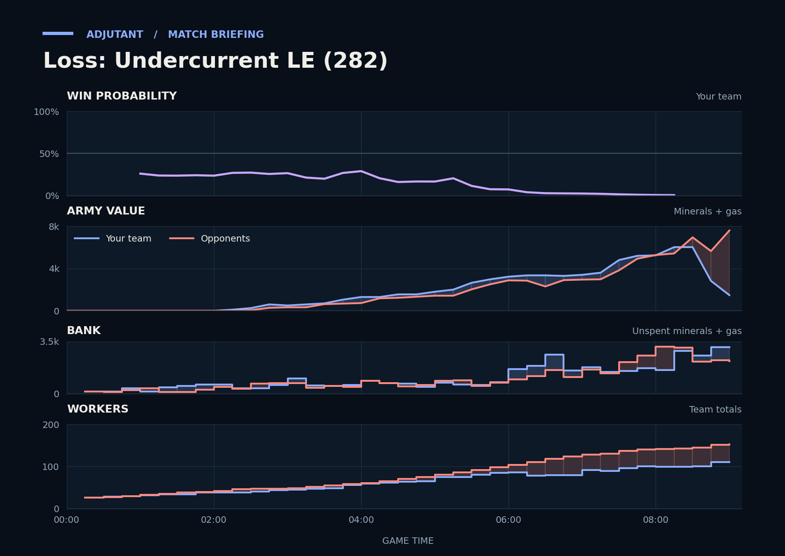

Loss: Undercurrent LE (282)
Provisional debrief. The full report (timeline, insights and analysis) is being generated.

**Loss.** In the 8:32–9:09 fight away from bases, the duo went in slightly behind on army value, then lost most of their army, mostly to Slayer's Marines.
**Why**
- 5:41–7:07: Dark Templars killed SCVs at Scallop's main and natural, dropping Scallop to 30 workers.
- 8:32–9:09: TakeTheTip lost 13 Drones and the fourth Hatchery to Slayer's army, and the duo ended with gg.